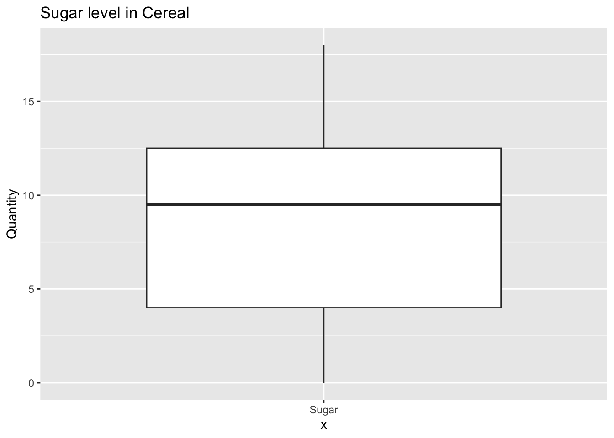
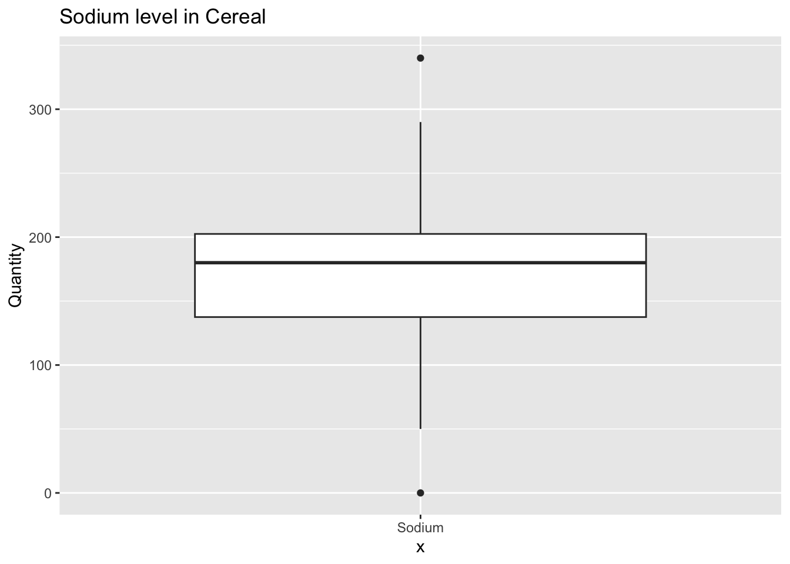
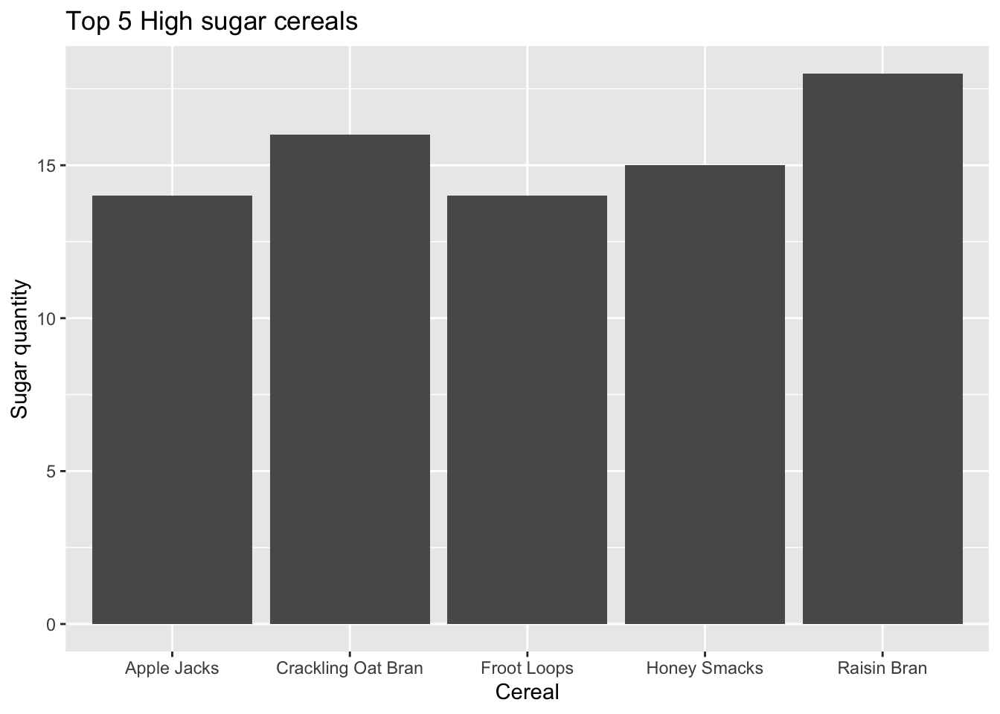
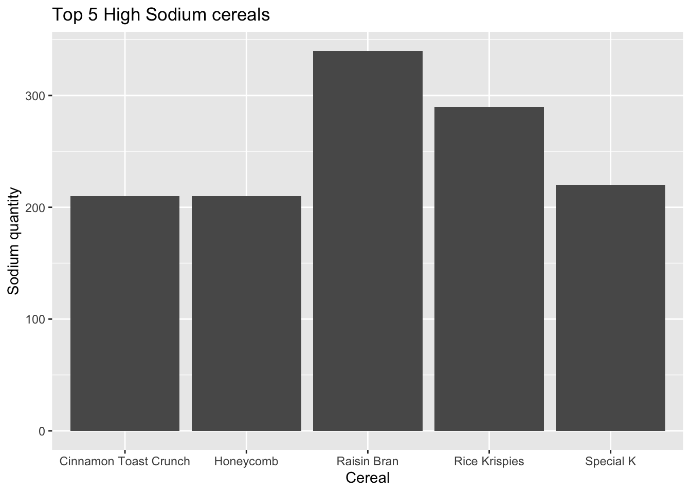
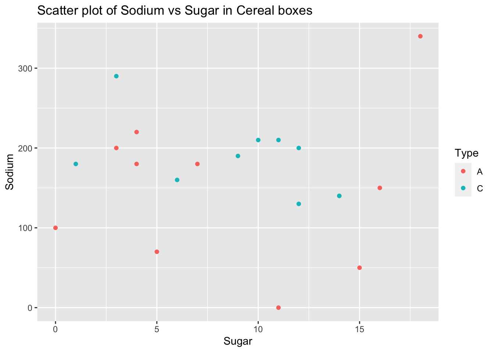

library(tidyverse)
library(ggplot2)
knitr::opts_chunk$set(echo = TRUE, warning=FALSE, message=FALSE)Challenge 5 Solution
challenge_5
cereal
Introduction to Visualization
Challenge Overview
Today’s challenge is to:
- read in a data set, and describe the data set using both words and any supporting information (e.g., tables, etc)
- tidy data (as needed, including sanity checks)
- mutate variables as needed (including sanity checks)
- create at least two univariate visualizations
- try to make them “publication” ready
- Explain why you choose the specific graph type
- Create at least one bivariate visualization
- try to make them “publication” ready
- Explain why you choose the specific graph type
R Graph Gallery is a good starting point for thinking about what information is conveyed in standard graph types, and includes example R code.
(be sure to only include the category tags for the data you use!)
Read in data
Read in one (or more) of the following datasets, using the correct R package and command.
- cereal.csv ⭐
- Total_cost_for_top_15_pathogens_2018.xlsx ⭐
- Australian Marriage ⭐⭐
- AB_NYC_2019.csv ⭐⭐⭐
- StateCounty2012.xls ⭐⭐⭐
- Public School Characteristics ⭐⭐⭐⭐
- USA Households ⭐⭐⭐⭐⭐
cereal <- read_csv("_data/cereal.csv")
cereal# A tibble: 20 × 4
Cereal Sodium Sugar Type
<chr> <dbl> <dbl> <chr>
1 Frosted Mini Wheats 0 11 A
2 Raisin Bran 340 18 A
3 All Bran 70 5 A
4 Apple Jacks 140 14 C
5 Captain Crunch 200 12 C
6 Cheerios 180 1 C
7 Cinnamon Toast Crunch 210 10 C
8 Crackling Oat Bran 150 16 A
9 Fiber One 100 0 A
10 Frosted Flakes 130 12 C
11 Froot Loops 140 14 C
12 Honey Bunches of Oats 180 7 A
13 Honey Nut Cheerios 190 9 C
14 Life 160 6 C
15 Rice Krispies 290 3 C
16 Honey Smacks 50 15 A
17 Special K 220 4 A
18 Wheaties 180 4 A
19 Corn Flakes 200 3 A
20 Honeycomb 210 11 C summary(cereal) Cereal Sodium Sugar Type
Length:20 Min. : 0.0 Min. : 0.00 Length:20
Class :character 1st Qu.:137.5 1st Qu.: 4.00 Class :character
Mode :character Median :180.0 Median : 9.50 Mode :character
Mean :167.0 Mean : 8.75
3rd Qu.:202.5 3rd Qu.:12.50
Max. :340.0 Max. :18.00 Briefly describe the data
This dataset contains the data of sodium, sugar and type of different cereals in US. It is a small dataset with 20 rows and 4 columns.
Tidy Data (as needed)
Is your data already tidy, or is there work to be done? Be sure to anticipate your end result to provide a sanity check, and document your work here.
The Sodium and Sugar values are present in numbers but we don’t know the units for it. The type column contains values A and C but we are not sure what they mean to mutate it thus we can leave it as it is. Thus there is not much we can do to tidy it,
unique(cereal$Type)[1] "A" "C"Univariate Visualizations
We can check the sugar and sodium levels across all cereals using a box plot. Thus will give us an overall of max, min, median quantity of sugar and sodium for cereals. I have also created a graph of top 5 cereals with highest sugar and sodium. Out of the 20 cereals, Raisin bran seems to have the highest sodium as well as highest sugar and thus should probably be avoided.
ggplot(cereal)+
geom_boxplot(aes(x="Sugar", y=Sugar)) +
labs(title = "Sugar level in Cereal", y="Quantity")
ggplot(cereal)+
geom_boxplot(aes(x="Sodium", y=Sodium)) +
labs(title = "Sodium level in Cereal", y="Quantity")
cereal_sugar <- head(arrange(cereal, desc(Sugar)),5)
ggplot(data = cereal_sugar, aes(x = Cereal, y = Sugar)) +
geom_bar(stat = "identity") +
labs(title = "Top 5 High sugar cereals", x = "Cereal", y = "Sugar quantity")
cereal_sodium <- head(arrange(cereal, desc(Sodium)),5)
ggplot(data = cereal_sodium, aes(x = Cereal, y = Sodium)) +
geom_bar(stat = "identity") +
labs(title = "Top 5 High Sodium cereals", x = "Cereal", y = "Sodium quantity")
Bivariate Visualization(s)
I created a scatter plot of Sugar and Sodium for cereal which are distinguished by Type A or C based on the color. This graph gives us a picture of sodium and sugar level in cereal together.
ggplot(cereal)+
geom_point(aes(x = Sugar, y = Sodium, color = Type))+
labs(title="Scatter plot of Sodium vs Sugar in Cereal boxes", x = "Sugar", y = "Sodium")